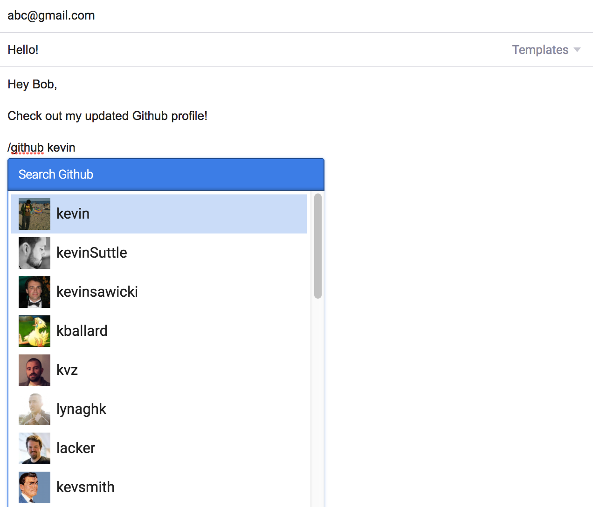

| Frontend | Backend | Mobile | Design | |||
|---|---|---|---|---|---|---|
| HTML5 | Java | iOS (Swift, Objective-C) | Photoshop | |||
| CSS3 | Python | Android (Java) | Illustrator | |||
| Javascript | C/C++ | PaintCode | ||||
| jQuery | MySQL | |||||
| Bootstrap | Ruby on Rails | |||||

Explored the developmental biology of stem cells in mice and humans, and overviewed the important functional differences between embryonic, hematopoietic, and adult stem cells as well as the differences in their biomedical potentials.
Conducted Immunohistochemistry (IHC) and Western Blot samples and Western Blot to detect the presence of ubiquitin in the bicep cells of mice diagnosed with Inclusion Body Myopathy associated with Paget's disease.
GPA: 4.0/4.0, SAT: 2350/2400
Implemented openCV framework and conducted performance comparisons for CellScope mobile microscopy applications at Waller Lab, UC Berkeley. Application produces higher resolution images from raw pixel data acquired in mobile device by the CellScope microscope via Bluetooth.
Responsible for assisting students in grasping key concepts of data structures, sorting algorithms, runtimes, and basic software engineering concepts, as well as answering project or lab-related questions.
Assisted the transition from manual check sampling to an electronic auditing system. Expedited the audit procedure through more efficient check sampling, lease and retail void processing, and flat cancel and re-book tracking.
Research assistant under Dr. Keigo Machida in a microbiology/immunology laboratory studying molecular oncogenesis, the mechanism of carcinogenesis through cancer stem cells, using mouse models associated with the hepatitis virus.
Founded Science and Technology Out-Reach Mission (STORM), a student run organization at the Discovery Science Center with the purpose of inspiring young students to pursue careers in the STEM fields by making resources and opportunities available to elementary students of all social classes and genders.
Through a partnership with Fremont Elementary School and a $500 grant from Kia Motors America, we coordinated hands-on science experiments and engineering projects for the students on a weekly basis.

Using the Twitter Streaming API and Google Maps API, I developed a web application that plots the geo-locations of real-time twitter updates around the world. Streams/counts all tweets after the application loads.
I created a slash command built on top of the Mixmax SDK that enables email users to search and attach Github user profiles to their emails. Runs on Node.js via nodemon.

Built a middlebox application that optimizes the amount of data transmitted over a wide area network (WAN) that stores data sent previously, and utilizes this information to avoid re-sending the same data.

App Track is a web application that allows users to effectively track and organize all of their applications, created during the CSUA Hackathon 2016 at UC Berkeley. Whether it be college or job applications, App Track provides a user database where each individual can sort their applications by date and status, and allows the user to search for particular names in case the list grows very long.
Utilizes learning switches and distance-vector routers to transport packets to destinations efficiently while accounting for dynamic network topology updates. Implements features similar to Routing Information Protocol. Coded in Python.
Created a chat server via the Python socket library that allows users to converse in different channels. Clients can create/join different channels, and messages are relayed to all other members of a particular channel.
My personal "about me" website that I developed from scratch. Built using Jekyll and hosted on Github Pages.
Developed an iOS application designed to help dancers practice more efficiently through tempo and pitch control, markers to loop particular sections of music, and basic mixing of soundtracks.

Created the iOS version of CellScope mobile microscopy application that produces higher resolution images from raw pixel data acquired made available with iOS 10. I utilized openCV framework, implemented Fourier Transform algorithms, coded Bluetooth features, and conducted performance comparisons.
Given an abundance of page requests, matched request/reply pairs to construct Query Focused Dataset objects that were ultimately serialized into Hadoop File System. Coded in Java.
Constructed a depth map using C that works with 8-bit grayscale bitmap images, and used techniques such as SIMD, OpenMP, and loop unrolling to optimize performance.
Created a 32-bit two-cycle pipelined processor implemented via Logisim.
Created a two-pass assembler that translates MIPS instruction sets to machine code using C, and a linker that processes object files passed from the assembler to generate an executable file via MIPS.
Created a smaller version of the Git control system that mimics certain features such as: add, commit, branch, checkout, merge, rebase, log. Coded in Java.
Created a two-player game of Checkers with a slight twist by introducing two new pieces: Bomb and Shield. Coded in Java, with implementations of the StdDraw library from Princeton University.

Created a program that parses/reads code written in Scheme and evaluates the code recursively using Python.
A game inspired by the popular Plants vs Zombies, where the user populates the ant colony with a variety of different ants to defend the queen against the bees. Coded in Python.

Main Stacks is UC Berkeley's premier non-profit and competitive urban dance team. Created in January 2008, Main Stacks holds monthly dance classes open to the public, and competes at major competitions across California. As the host of Prelude Norcal, one of the largest hip-hop competitions in Northern California, since 2010, we are preparing a set to present to the greater dance community. The videos below are performances from Bridge Dance Competition 2016 and Prelude Norcal 2016. Stay tuned for more videos!
Truelement is an exhibition team at UC Berkeley that focuses on urban hip-hop style dance. Our summer team created and performed our set at Complex Dance Competition 2016.
Identity X is a UC Berkeley competitive dance team created in Fall 2013. We competed at various competitions around CA, including Prelude Norcal, Maxt Out Dance Competition, and Bridge Dance Competition. Check out our set from Bridge SoCal 2015!
AFX Dance is a hip-hop dance organization founded in Fall 2011 at UC Berkeley. I was involved in several teams: SK Modern (Fall 2015), Kryan (Summer 2015), and MaWang (Spring 2016).
The mission of the Orange County Youth Symphony Orchestra is to provide pre-professional training to Orange County’s most talented young musicians through varied performance opportunities, and by establishing an environment that develops creative ability, self-expression and the desire for perfection. As principal flutist, I participated in the orchestra from 2011 to 2013, participating in several performances and concerts in Southern California, and most notably taking part in the "Concert for Fifth Graders" series hosted by the Philharmonic Society, which aims to provide free musical education to underprivileged students around California. Check out some of our performances here!